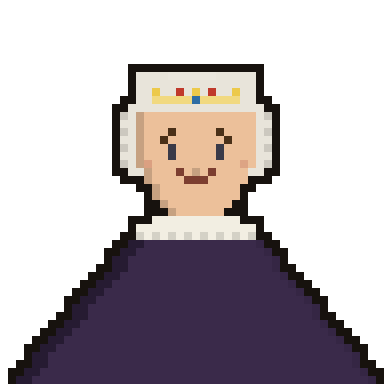

GEN. KACHOWSKI
Dowódca armii rosyjskiej · Lv.29
HP
1792 / 1792
KS. JÓZEF PONIATOWSKI
Wódz wojsk Rzeczypospolitej · Lv.30
HP
1792 / 1792
18 czerwca 1792. Na zielonych wzgórzach Podola wojsko polskie zasłania odwrót po wkroczeniu Rosji. Jak poprowadzi obronę książę Józef?
ZWYCIĘSTWO!
Książę Józef odpiera Rosjan i osłania odwrót. Za to zwycięstwo ustanowiono order Virtuti Militari. Zieleńce, 18 czerwca 1792.